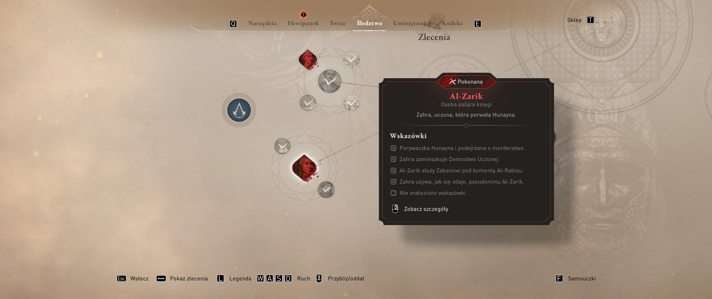

powrót do korzeni to raczej to nie jest; ot, po prostu, jeżeli ktoś sobie lubi popykać w tego typu gry, to przynajmniej jest ona wystarczająco krótka, coby się nie znudziła; nawet fabularnie zostało to wykastrowane z wątku animusa; mimo wszystko, chyba było by lepiej, żeby było to jednak dlc do valhalli;
w ustawieniach odnajdziemy również tajemnicze „my owo”;
“OWO Connect is an App developed by OWO that aims to provide gamers with the ability to feel sensations in all games compatible with the Second Skin through the Overwolf platform. Using OWO Connect with a companion application called "My OWO App" enables the transfer of event information and sensations from games to users.”
podstawowy wpis w kodeksie i ten sam wpis na nowej planszy wydają się różnić wygładzaniem czcionki;
kodeks: założenie bagdadukodeks: założenie bagdadu z wygładzoną czcionką
literówek w tekście jest wręcz multum; przykłady: „bo” gdy winno być „po”; ci → co; monetą → monetę; leczy → lecz; to → o; wysoka → wysoką; „zakądke” → zakądka; „manuskrpyty”; „które z których” (w tym przypadku nie rozumiem jak powinno brzmieć zdanie); co więcej tłumaczenie upiera się używać konsekwentnie formy „dziewiątowiecznego”, „siódmiowiecznych”, itd.;
do tego miesza się tutaj znaturalizowany arabski z jego romanizacją; zatem z jednej strony widzimy „harbijja”, co czyta się przez „j” (harbiyya), a z drugiej strony mówi się i widać na mapie miejsce znane jako „jarjaraya” (dżardżaraja);
z innej jeszcze strony pada w tej grze w scence przerywnikowej „allah akbar”, lecz w formie przetłumaczonej już na angielski („god is great”); na swój sposób jest to spójne ze wszędobylskimi „osobami cywilnymi”;
osoba cywilna
przy wyborze dialogów widać nieco przesunięte cyfry względem tekstu zasadniczego;
przesunięte cyfry przy wyborze dialogów
podczas „wkraczania” w dialog pojawiają się filmowe pionowe pasy po bokach ekranu; można się z tym uporać drobną modyfikacją pliku wykonywalnego gry; → ref
pionowe pasy po bokach podczas dialogówdialogi bez pionowych pasów po bokach po modyfikacji pliku wykonywalnego
klatkaż filmików przerywnikowych jest ograniczony do 30 fps;
pan kamerzysta przy głaskaniu kota wariuje tak że nic nie widać; efekt jest podobny jak wtedy, gdy basim znika przy ręcznym kadrowaniu myszką podczas rozmów;
w zleceniach pobocznych wracamy do tych samych miejsc, ale dopiero wtedy, gdy do danego miejsca doprowadziły nas wydarzenia fabularne;
w praktyce to powoduje iż są takie miejsca, gdzie przeciwnicy nieustannie się respawnują w pewnym promieniu od awatara gracza, dopóki zlecenie związane z tym miejscem nie zostanie ukończone;
tacy przyjemniacy potrafią się zrobić nadgorliwi, szukając wszędzie podstępu, chociaż wszystkie ciała zostały pochowane;
zlecenia
# największy mankament
przede wszystkim na linuxie występuje vortexowy artefakt graficzny dla nowszych wersji protona; w praktyce uniemożliwia to dostrzeżenie czegokolwiek;
nakładka ubisoft connect w grze (overlay pod lshift+f2) ładuje się wolno i „odnawia” się po zmianie rozdzielczości;
ogółem działa to na tyle rachitycznie, że w ogóle obcowanie z nią na linuksie to ból;
zwłaszcza iż raz śledzi ona akcje gracza w ramach wyzwań, a innym razem je ignoruje; aczkolwiek w tym przypadku to może być kwestia użycia odpowiedniej wersji protona;
z kodeksu rzeczywiście można się ciekawych rzeczy dowiedzieć, chyba że żyje się światem arabskim na co dzień i czyta się koran do poduszki;
przykładowo: w imperium abbasydów porywano dziewczęta w niewolę wyłącznie po to, by uczyły się tańczyć, śpiewać, grać na instrumentach czy recytować poezję;
nie zabrakło w tym jednak komizmu na jaki stać jedynie ubisoft;
humoreska: prostolinijny brutal motywujący swego kolegęhumoreska: skarga na wszędobylskie stogi siana przy budynku szurty
# kradzież kieszonkowa
nie można zabierać ludzikom przedmiotów z zamiarem nieoddania frontalnie, trzeba im zaleźć za plecy;
nie wszystkich cywilów można okradać, bo nie wszyscy noszą przy sobie sakiewkę;
ofiary będą po chwili wzywać straż i się drzeć, co zwraca uwagę strażników na basima;
co więcej, jeżeli poziom ścigania za nielegalne uczynki jest wysoki, to cywile będą wytykać basima palcem; nie utrudnia to jednak samego czynu;
za kradziejstwo zdobyć można sztony służące do płacenia za niektóre usługi jak wtopienie się w grupę kupców przechadzających się po terenie zamkniętym dla obdartusów;
żeby wiedzieć kogo warto okradać do zadania pobocznego dla miejskiego pasera (artefakty dervisa) można zdobyć mapę od pana kartografa w kolistym mieście;
sklep pana kartografa
# kontrowersyjne nowości
słychać sapanie basima podczas wspinaczki;
pojawili się nowi przeciwnicy: strzelcy orłowi; uniemożliwiają oni zwiad z pomocą enkidu-drona;
kodeks: strzelec i jego słabości
można rzucać nożami przez otwory w balustradzie, aczkolwiek mogło być to niezamierzone;
można rzucać sztyletami przez dziury
można też wykonywać skok o tyczce pozwalający dać susa na dalej oddalony dach, tyle że nie ma ich szczególnie wiele;
nie ma łuku, zatem nie ma i polowania na zwierzynę, a samych zwierząt nie można oznaczać orłem;
raz odryglowane drzwi pozostają takimi dla innych misji;
elementy liczone do zbieractwa jak wpisy do kodeksu pojawiają się na mapie dopiero po jej największym przybliżeniu, które jest nieco zbyt wielkie, by było poręczne do przeczesywania;
za odnajdywanie ukrytych kosztowności otrzymuje się teraz barwnik do odzienia;
jedna z zagadek, skarbów do odnalezienia
struktura gry jest tak prosta jak w assasin's creed 1: poszukuje się wskazówek odnośnie celów a potem się ich morduje;
niektóre jednak z nich są poukrywane za nieoczywistymi wymaganiami;
przykładowo: z al-zarik (zahrą) wiąże się pięć poszlak, które można odszukać;

śledztwo: wskazówki
ostatnią z nich można zdobyć z listu przy jej ciele, dlatego też jeżeli zabije się ją bez dotykania jej (np. trucizną) to nie otrzymamy tej informacji;
niektórzy odnotowują iż należy dokonać na niej sugerowanego zabójstwa z powietrza (air assassination), inaczej list będzie niedostępny;
w tym przypadku ostatnia wskazówka brzmi: „the book is key to the order's 'alruh'”;
w praktyce niczemu to nie służy, nie są one wszystkie wymagane do postępu, ani żadnego osiągnięcia czy nagrody;
styl rozgrywki ma nawiązywać do assassin's creed 1;
z jednej strony nawiązuje się do innych odsłon serii osiągnięciami, np. zebranie 2007 dirhamów nawiązuje do roku wydania gry, „orla wola” wymagająca wytrwania 10 minut w otwartym konflikcie to kopia osiągnięcia z czasów ezio;
z drugiej strony w grze pojawiają się tzw. bagdadzkie opowieści, tj. krótkie questy tematyczne; w jednym z tymże pojawia się dziecko o imieniu hytham (black flag), w innym jeden złodziej doprowadza do zagłady wioski (to chyba nawiązanie do przygód bayeka);
do tego w ubisklepie pojawił się strój ezio z revelations;
sceneria: alamut z filmiku przerywnikowego
ostatecznie, orzeł basima nazywa się enkidu; enkidu był półlwim przyjacielem gilgamesza; jest to nawiązanie przedstawione pod koniec wstępu fabularnego w anbarze podczas rozmowy z nehal;
# osiągnięcia
osiągnięcia w mirage to nudzenie typowe dla ubisoftu; jedyną opcją do rozważenia jest „pełna synchronizacja” czyli permadeath;
permanentna śmierć albo pełna synchronizacjanowa gra+: opis przed wyborem trybu
achievements
Riddle Me This
Obtain a treasure by solving an enigma
Patron of Industry
Pay merchant groups 5 times
in Jarjaraya
Blade in the Crowd
Assassinate 10 guards while blending with the crowd
7z a -ttar \"$HOME/library/roboczy/ac mirage.tar" \"/run/media/$USER/games/SteamLibrary/steamapps/compatdata/3035570/pfx/drive_c/Program Files (x86)/Ubisoft/Ubisoft Game Launcher/savegames"
ubisoft connect
uruchomienie gry wymaga najpierw uruchomienia ubisoft connect; w terminalu będzie wtedy widoczny komunikat:
“WGL_NV_DX_interop2 is required but not present.”
jest on związany z błedem w bibliotece libgl; hipotetycznie można to naprawić opcją __GLX_VENDOR_LIBRARY_NAME=NVIDIA ale w moim przypadku nie widać różnicy;
uruchomienie ubisoft connect wiąże się z pokazaniem miniokna explorer.exe z ikoną programu w zasobniku systemowym (tray icon); można spróbować to wyłączyć, lecz wtedy ubiprogram odmawia posługi;
inną kwestią jest dość długie samo w sobie uruchamianie się nakładki ubisoft connect (około minuty); w tym czasie nie można grać w grę, bo myszka i klawiatura chcą przewcześnie odpowiadać na overlay (lshift+f2);
vortex artifacts
przede wszystkim jednak problemem są artefakty graficzne przy używaniu protona; na tę przypadłość pomagają stare wersje;
“Newest proton versions make this game unplayable. Vortex graphic explosions. GE-Proton8-1 fixes the graphic streching issue for me.”
niemniej jednak, potwierdzam iż zarówno ge-proton8-3 jak i proton-ge-9-22 zadziałały; aczkolwiek do wersji 9-tej konieczne są wtedy opcje uruchamiania;
działa również i proton-ge-9-25, lecz ten wymaga dodatkowej opcji dostępnej od tej wersji, inaczej okno gry będzie miało problem ze skupieniem;
podczas wchodzenia w dialog z npc-ami, tudzież w filmikach przerywnikowych pojawiają się pionowe czarne pasy po bokach ekranu;
“Pre-rendered cutscenes are displayed as 16:9.”
można sobie z nimi poradzić modyfikując plik wykonywalny gry;
flatpak install flathub com.github.afrantzis.Bless --usercd "/run/media/$USER/games/SteamLibrary/steamapps/common/Assassin's Creed Mirage"flatpak run com.github.afrantzis.Blessbless> open / ACMirage.exebless> search / find and replace (ctrl+r) / search for "39 8E E3 3F" , replace all with "26 B4 17 40"bless> file > save (ctrl+s)# 26 B4 17 40 oznacza aspekt 21:9 w rozdzielczości 2560x1080